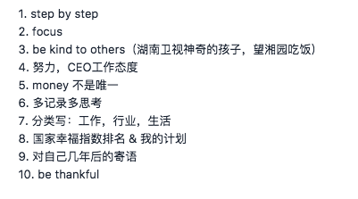
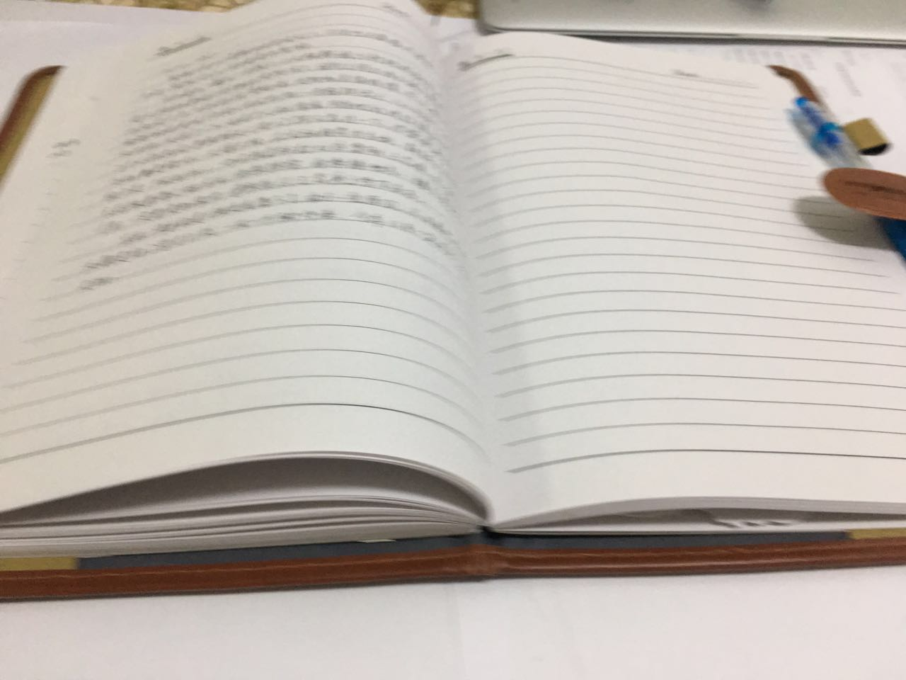

工作 3 年后的一些思考【Part 1】
2017-05-31
1. 从 7 年前的一部纪录片说起
故事还得从 7 年前说起，2010年，也是我告别高中，踏入大学生涯的第一年，央视出了一个纪录片：《华尔街》，讲述了新世纪时期的金融发展历程和其中很多有趣的故事，及时现在回顾，我依然还会觉得这是一部非常不错的纪录片。
我不太记得自己是什么时候看的这部纪录片了，当时【甚至直到现在】，我对其中 2 个片段记忆依然非常清晰。第一个是讲诉一位华尔街的交易员斯科特，每天都要乘最早一班的轮渡从新泽西到曼哈顿上去上班。当时对我一个连海都没见过的小子来说，这真是超酷，居然可以每天坐船去上班，而且看见主人公斯科特的样子，非常精明干练，内心对那些在华尔街上穿梭的人顿时有一种崇拜，羡慕，佩服的感情。

第二个镜头是采访骑士资本的一个交易员，史蒂夫，主要讲述了骑士资本的自动化交易的故事，据说当时骑士资本有 90% 的交易量都是由计算机自主成交的。Unbelievable, Amazing, Cool — 这是当时我最大的感触，作为一个偏计算机专业的学生，我突然发现原来计算机并不仅仅可以简单的做一些图形化【GUI】的计算器，不仅仅可以搞一些工业设计【auto cad】，不仅仅可以写写资料【office】，不仅仅可以用来打打游戏聊聊qq，原来计算机居然还有这么大的用处，简直就是一个宝藏啊，怪不得比尔盖茨可以用计算机来赚这么多钱。【请原谅我当时的无知，当时我用电脑就是看电影，查资料，玩游戏，和学习编程；甚至在当时，我连 服务器 这样的名词都木有听说过】

当时看完这部纪录片，我发现自己见识真是太少了，同时也对华尔街，金融充满了向往，或者更准确的说，是一种发自心底的好奇，尊敬和佩服吧。故事到这里，按照一般小说／电视的剧情应该是我从此发奋学习，学习了很多金融专业的知识，毕业后毫不费力的以优异的待遇进入一家外企金融公司，从此走上实现梦想的道路吧。可是这不是小说，也不是电视剧，而是我一个臭小子的真实经历。是的，就跟大多数大学生一样，看完纪录片后没多久，我就渐渐把这种心里的好奇感，敬佩感，向往感埋没在其他新鲜的事物，活动以及欣赏学校里各种各样的美女中去了。
不过万幸的是，幸好大学期间我还保留了自己的一些兴趣，以及把计算机这个专业学得不错。我大学期间有两个兴趣，一个是写英文书法，第一个原因是看过美国独立宣言的原本照片，觉得那上面的字体真是美到家了，被这种书写之美完全折服了；第二个原因是想用这种字体来写情书的话，效果肯定也不错吧。于是说干就干，特地买了美国原装过来的笔杆，笔尖和英文教程，开始练习起来，你别说，还真学到了点好东西。到今天笔杆，笔尖和教材我都还保管得好好的。第二个是玩航模【动态航空模型】，后来还因这个爱好参加了学校的创新实践大赛，指导老师还带我去天津参加了个行业会议，也是大学里唯一一次去参加学术会议。到现在我还很感谢当时带我的指导老师，给我提供了很多很多资源，甚至还直接把他办公室的钥匙给我，我可以随时进出学习，实验甚至直接在里面上自习。
后来的后来，就是平平凡凡，普普通通的日子，逃课去玩耍，去听自己喜欢的老师讲课，为了看见一个女生天天跑图书馆自习，时不时的出去大餐喝酒，然后就这样没有发生什么惊天地泣鬼神的事迹下度过了大学生涯。
2014年3月初，过完学生时代最后一个寒假，我把毕业论文和毕业设计提前做完，在跟老师做了几次沟通后，于 3月下旬登上了去往上海的飞机，基本上算是告别了象牙塔时代吧【当时还尚未正式毕业，7月份回校办理毕业手续，才正式告别学校生涯】。
还记得当时花了 ～3 天时间才租到了个不错的房子，花了几天时间置办了家具和休息了几天，在 4月1号，也就是愚人节那天正式开始了我的工作生涯。之所以记忆这么清晰，还有一个原因，那年的 4月1号 刚好是我阴历的生日，而且能进入 datayes，可以说是误打误撞，一路好运才能进去的吧。虽然说在当时看来，datayes 才成立半年左右，但招聘的人基本上都是研究生毕业的，当时我一个本科也能进去，心里面确实有很强的幸运感。
2. 工作 3 年，我的一些感悟
晃眼间就跌跌撞撞的到了现在，再过一个来月就到了自己正式入职3个年的时间了，虽然实际上偶已经工作3年多了【14年4月1号就以实习的身份进入了公司，当时还没有拿到毕业证书，不能签正式合同】。这三年虽然过得很快，但也发生了很多大大小小，五味杂陈的事情，自己在各个方面也有了更全面深入的认识。
最近看到一些师兄师姐写的一些工作，生活感悟，想想自己再过几个月也正式工作 3 年整了，觉得也该写点东西，回顾过去，反思现在，寄语未来 吧。这三年中，从最开始的软开，到现在的量化工程师，短短3年中得到了很多业内专业人士的指导，见识到了很多金融方面的新知，虽然没有做过交易相关的工作，但是我越来约觉得自己所做的事，和几年前《华尔街》里的很多场景都很相似，每每想到这些，我都感到非常幸运，没有想到多年前在心中埋下的对金融这个领域，佩服，向往和好奇的种子，在如今居然能生根发芽，这种感觉真的很奇妙。
我想这一切也许真的不是简单的巧合，或许在几年前看《华尔街》的时候，就隐隐约约有一些变量在影响着自己，引导自己在毕业找工作的时候选择了现在的这家 fin-tech 公司，并且还能机缘巧合的在 datayes 做在我个人看来最 amazing 的产品。也许，真的应验了那句话：What you are is what you have been. What you'll be is what you do now. 我也准备把工作这几年的一些感悟，思考记录下来，看看未来 3年，5年后，再回顾今天的这些文字，我会是怎样的一番心情呢？
我列了一些自己想记录的列表，准备分几篇写下来，下面是这个列表，看看最后能不能写完啦，哈哈。

其实我自己是有一个周记本的，一般每 1 ～ 3 周会写一次周记，记录最近发生的一些事，以及自己的一些思考和计划。原本打算把这篇博文也写到周记里的，不过想想既然是工作 3 周年的感想，也可以写到网上，让大家帮忙指导指导，提提建议啥的。下面图中这个本子是我 14 年 4月1号 开始工作后到现在写的周记本，基本上能保持一月至少一篇的节奏吧，本子差不多写了 2/3 了，现在有时候空闲下来还会翻翻，哈哈，真的挺有意思的。

这里再次推荐一下，我觉得写周记是很有意义的一件事情，不一定非要每周都写，一月一次都行，只要你觉得有值得记录的事就行啦。我个人很喜欢写，第一个原因是写周记可以让自己在空余的时候冷静回顾和思考过去的一些事情，也能时刻提醒自己如何做事做人做更好的自己；其次，也是最重要的一个原因，是记录自己当前的状态，在以后很多时候可以随时翻来看看这些青春的回忆，肯定超有趣的，就跟看故事书一样，我现在还会偶尔翻翻自己大学期间写的周记，虽然不多，但是确实很有意义，会发现自己在一些观点上发生了一些改变，也会发现自己在一些观点上始终坚持同样的看法，非常有意思。